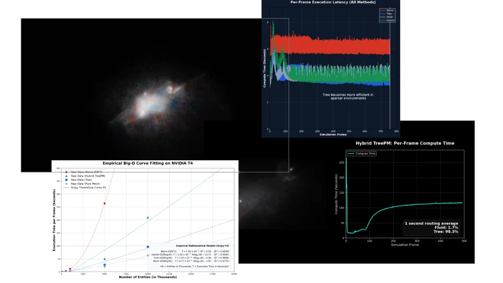
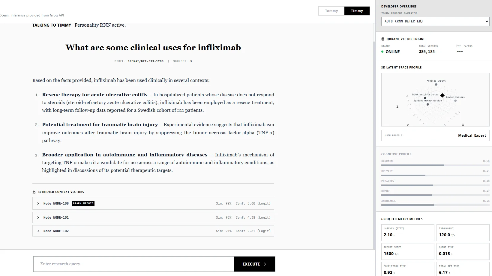
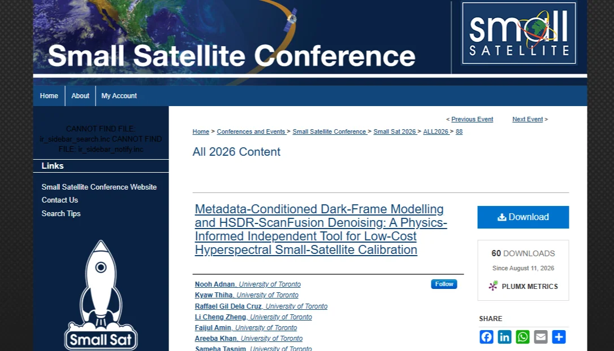
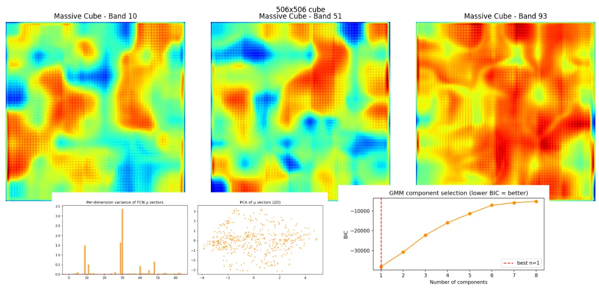
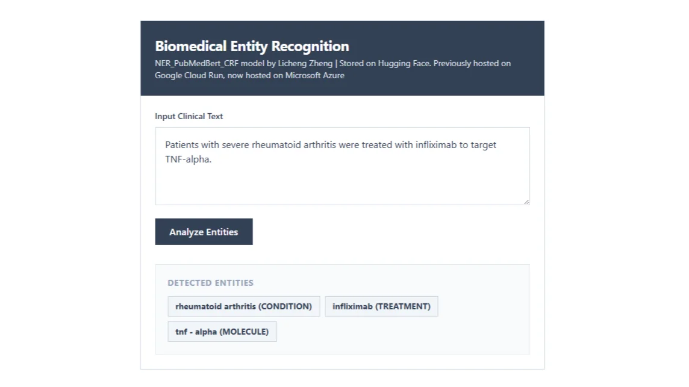
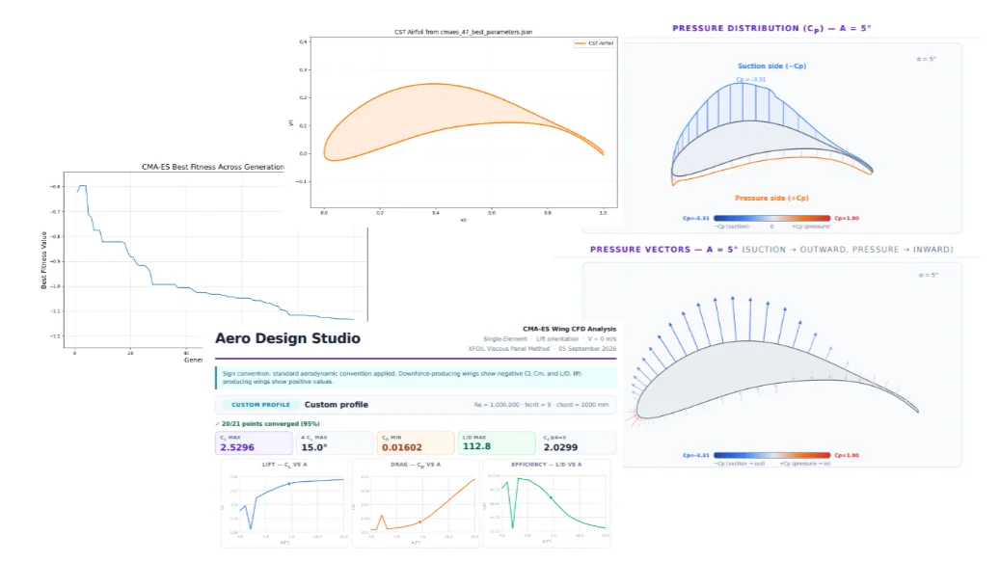
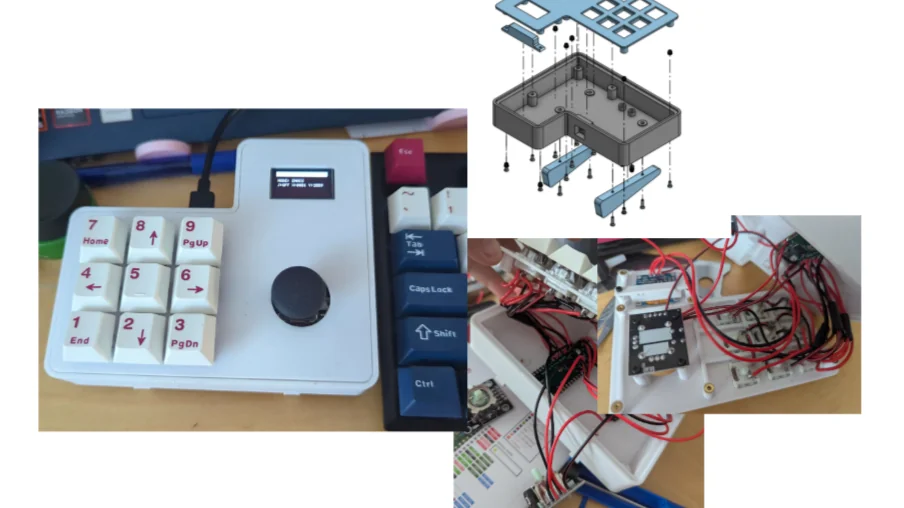

Projects
Recent works which include low-level CUDA simulations and hardware builds.

Compoxel N-Body
Massive-scale TreePM N-Body gravity simulation created in CUDA to prevent cache thrashing during high-density computation

Timmy and Tommy
Deployed RAG pipeline on Microsoft Azure web services using QDrant Database for fast retrieval with custom Recurrent Neural Networks for personality and user profile layers.

SmallSat Conference Paper (UTAT)
Metadata-Conditioned Dark-Frame Modelling and HSDR-ScanFusion Denoising.

Memory Interface
Pytorch memory interface layer which greatly reduces memory fragmentation when testing large language models.

Hyperspectral VAE (UTAT)
Trained and evaluated multiple encoder and decoder architectures to generate hyperspectral data from a learned latent space.

BioNERBERT with Custom CRF
Deployed a biomedical Named Entity Recognition (NER) model featuring custom entities and a Conditional Random Fields (CRF) Layer

Airfoil Optimizer
Created a parallelizable genetic algorithm which optimizes an airfoil for specific user-provided conditions.

Custom Macropad
Modelled and built a highly programmable custom macropad with a joystick and screen for additional input methods and improved user experience.